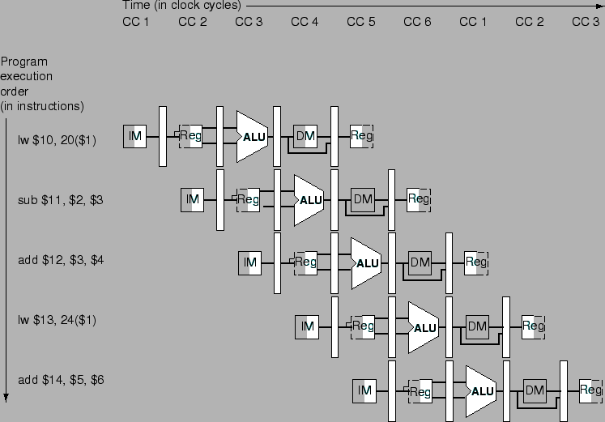
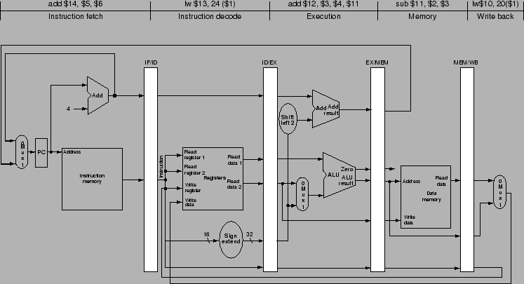

ทางครั้งการทำงานของไพพ์ลายน์มีความยากในการทำความเข้าใจ เนื่องจากมีหลายคำสั่งทำงานพร้อมกัน การอธิบายจึงใช้แผนภาพประกอบการทำงานไพพ์ลายน์ ซึ่งมีแผนภาพที่เป็นที่นิยมอยู่สองลักษณะได้แก่ แผนภาพไพพ์ลายน์แบบ Multiple-clock-cycle และ แผนภาพไพพ์ลายน์แบบ Single-clock-cycle เช่นในรูป 6.12 ถึง 6.16
พิจารณาคำสั่ง 5 คำสั่งดังต่อไปนี้
lw $10, 20($1) sub $11, $2, $3 add $12, $3, $4 lw $13, 249($1) add $14, $5, $6
รูป 6.19 แสดงแผนภาพไพพ์ลายน์แบบ Multiple-clock-cycle ในการประมวลผลคำสั่งทั้ง 5 ขั้นต้น โดยเวลาการประมวลผลเริ่มจากซ้ายไปขวา และคำสั่งเรียงจากบนลงล่าง รูป 6.20 แสดงแผนภาพไพพ์ลายน์แบบ Multiple-clock-cycle ที่แสดงชื่อของแต่ละสเตทในการทำงานแทนการแสดงด้วยรูปของส่วนประกอบนั้นๆ แทน
|

|
แผนภาพไพพ์ลายน์แบบ Single-clock-cycle สามารถแสดงรายละเอียดได้มากกว่าในส่วนของเส้นทางข้อมูล โดยการทำงานของคำสั่งจะแสดงอยู่เหนือสเตทที่กำลังทำการประมวลผลอยู่ ซึ่งในรูป 6.21 แสดง แผนภาพไพพ์ลายน์แบบ Single-clock-cycle ในการประมวลผลคำสั่ง lw, sub, add, lw, และ add ตามลำดับ อย่างไรก็ตาม แผนภาพไพพ์ลายน์แบบ Single-clock-cycle ใช้พื้นที่ในการนำเสนอมากกว่า
|

|